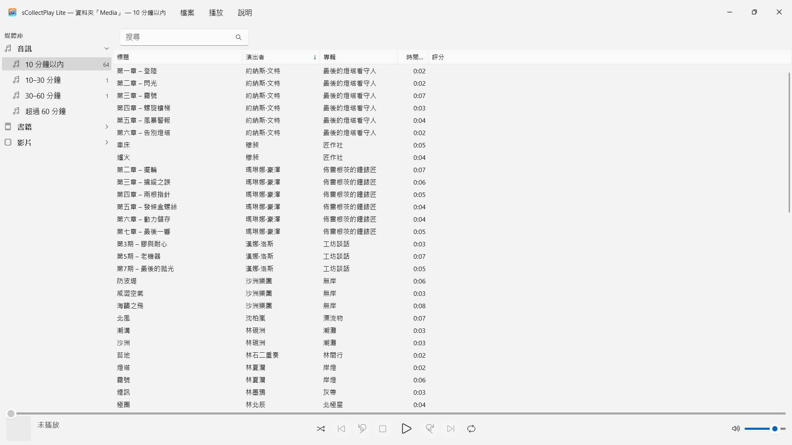
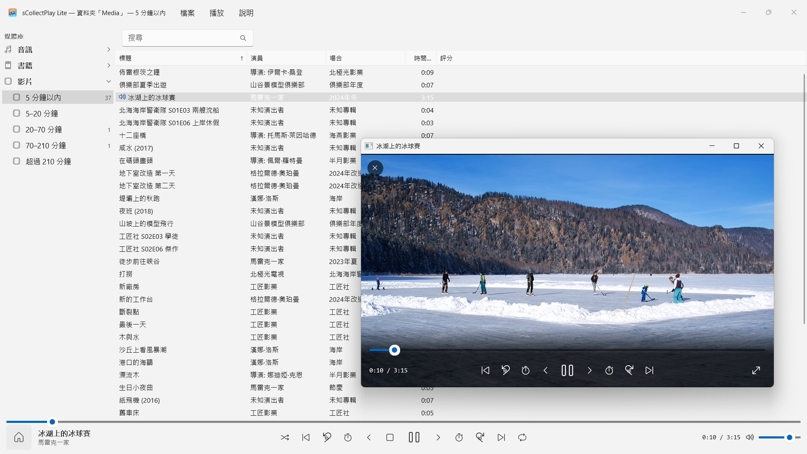

sCollectPlay Lite
免費：選擇資料夾即可播放 —— 無須匯入，無須複製
免費 · 2026年11月起於 Microsoft Store 上架免費：選擇資料夾即可播放——音樂、有聲書、Podcast、電影和電子書自動歸類。無須匯入，無須帳號，也無須雲端。也支援 iTunes 媒體庫（XML）。


sCollectPlay Lite 就在你的收藏所在之處播放它：任意資料夾、外接硬碟或網路磁碟。選擇一個資料夾，音樂、有聲書、Podcast、電影和電子書就會整整齊齊地排在一個清單裡 —— 無須匯入，無須複製，你的檔案也不會有任何改動。
24 種語言：英文、德文、捷克文、克羅埃西亞文、荷蘭文、芬蘭文、法文、匈牙利文、義大利文、日文、韓文、挪威文（書面挪威文）、波斯文、波蘭文、葡萄牙文、羅馬尼亞文、俄文、西班牙文、瑞典文、泰文、土耳其文、烏克蘭文、中文（簡體與繁體）。App 會依照 Windows 的顯示語言。
這個版本每次工作階段播放一個來源：一個資料夾或一個 XML。開啟另一個來源，就會取代先前的那個。
兩種來源
- 資料夾：sCollectPlay Lite 會掃描一個資料夾及其子資料夾，直接從檔案本身讀取標題、演出者、專輯、類型和時間長度。之後，「更新已掃描的資料夾」（Ctrl+R）只讀取新增、變更或移除的檔案。
- iTunes XML：Windows 版 iTunes 的媒體庫，包括播放清單、評分和播放次數。一首曲目是音樂、有聲書、Podcast、電影、影集還是音樂影片，App 會從 XML 中讀取。
整理，但不必你費力
資料夾不會告訴你，一個檔案是歌曲還是有聲書。因此，sCollectPlay Lite 在掃描時依時間長度分類：音訊分為 10 分鐘以內、10–30 分鐘、30–60 分鐘和超過 60 分鐘，影片則從短片一直到超過三個半小時的電影。這樣，歌曲、廣播劇單集和有聲書就各自分開，你什麼都不用設定。電子書和 PDF 由 App 依副檔名辨識。
尋找
- 依標題、演出者、專輯、類型等欄位搜尋 —— 播放清單中也可以
播放
- 音訊播放，附佇列、隨機播放和重複播放
- 影片在自己的視窗中播放，支援慢動作、逐格播放、選擇音軌和字幕以及全螢幕
- 大多數格式 Windows 可以自己播放 —— MP3、AAC、FLAC、OGG、Opus、WMA，以及 MP4、MKV、AVI、WMV 和 MPG。Windows 不認識的格式，例如 AIFF、DSD 或 FLV，App 會交給 Windows 中為該檔案類型設定的程式 —— 例如 VLC
完整版還有更多
sCollectPlay 可以將多個資料夾合併為一個收藏，重新啟動後仍記得上一次的來源，並提供依類型、演出者和專輯瀏覽的直欄瀏覽器、可自由選擇的欄位、自建播放清單和智慧型播放清單，以及將播放清單匯出為附 M3U8 清單的資料夾，供 VLC 和各種裝置使用。
你的檔案保持原樣
sCollectPlay Lite 不寫入標籤，也不更改中繼資料。只有在你明確下令時才會刪除：來自掃描資料夾或 iTunes XML 的媒體檔案會移至資源回收筒（在沒有資源回收筒的磁碟機上，例如網路磁碟機，確認後將被永久刪除）。sCollect 媒體庫中的檔案，App 永遠不會刪除。
在你的 PC 上，也僅在那裡
沒有帳號，沒有雲端，沒有分析，沒有廣告。App 只存取你交給它的資料夾。每一種語言都配有完整的說明文件。
- 需要 Windows 11 或以上版本
- 支援 24 種語言
- 技術支援： SwiftAppsBavaria@gmx.net
- sCollectPlay 和 sCollectPlay Lite 隱私權政策